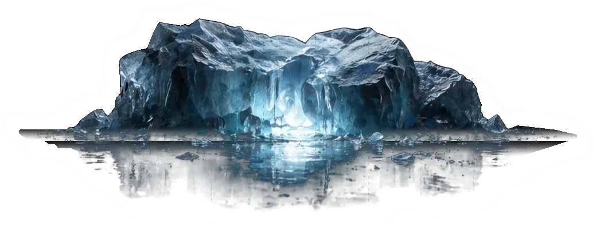

Options Strategy Builder
A place inside Upstox where options traders can build a strategy, see the risk, and place the order without opening a second app.
32% increaseActive FnO Clients
41% increaseAverage Daily TurnOver
👋 Hi! I'm Siddharth, currently designing at Upstox.

Above the surface
A place inside Upstox where options traders can build a strategy, see the risk, and place the order without opening a second app.
Rebuilding the Upstox home screen after it had quietly turned into a parking lot for every feature launch of the year.
Upstox's design system. Started when we realised the same button was shipping in five slightly different shapes.
The account opening flow was 24 screens. We got it to 16 without dropping a single compliance check.
At the waterline
Beneath the surface
I'm a product designer based in Bengaluru. Most of my work sits inside fintech and healthtech, on the kind of end-to-end problems where an idea has to survive a PM, an engineering team, a research round, and a live experiment before anyone calls it a design.
I found design by accident at NIFT Mumbai. Stayed for the moment a sketch turns into something a stranger opens on a Tuesday morning. Most projects are just me hunting for the version that feels obvious in hindsight, usually after four versions that weren't.
Open to full-time roles and freelance work, wherever there's a problem worth doing well.
Off Screen
Field notes, half-finished ideas, and the odd photograph. The stuff that sits behind the work but doesn't make it in.
Soundings
"Siddharth brings rare clarity to complex AI products. Clean thinking, world-class execution."
Founder, AI Workflow Platform"One of the strongest product designers we've worked with."
VP Product, SaaS Team"He turns half-formed product ideas into interfaces you can actually ship."
Head of Design, Future Tech StudioI take on freelance work and full-time roles. Fintech, healthtech, and messy product problems especially welcome.